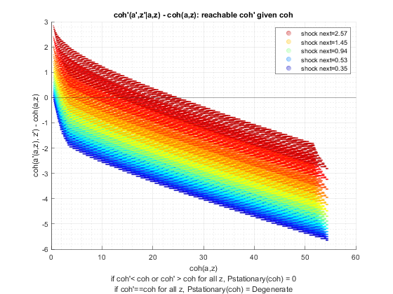

Test Preference (Savings Distribution)
back to Fan's Dynamic Assets Repository Table of Content.
Testing the ff_az_ds_vecsv program for solving the savings only dynamic programming problem.
defaults in ffs_az_set_default_param.m are:
- param_map('fl_beta') = 0.94;
- param_map('fl_crra') = 1.5;
here test three levels of discount:
- 0.87
- 0.925
- 0.97
for each shock, thest at these crra levels
- log (1)
- 1.5
- 2.0
@seealso
- SPEED savings only overall benchmark speed testing: fsi_az_ds_vecsv_speed
- PREFERENCE savings only preference testing: fsi_az_ds_vecsv_pref
- PREFERENCE savings only preference testing cross: fsi_az_ds_vecsv_pref_cross
- SHOCK savings only shock testing: fsi_az_ds_vecsv_shock
- SHOCK savings only shock testing cross: fsi_az_ds_vecsv_shock_cross
- PRICE savings only wage and interest rate testing cross: adjust wage and savings rate fsi_az_ds_vecsv_price_cross
- JOINT all parameters random draws joint test fsi_az_ds_vecsv_joint_rand
Contents
Set Shared Parameters
close all; clear all; ar_fl_beta = [0.87, 0.925, 0.97]; ar_fl_crra = [1, 1.5, 2.0]; it_a_n = 750; it_z_n = 15;
Simulate Model with Discount = 0.87
for fl_crra = ar_fl_crra disp('xxxxxxxxxxxxxxxxxxxxxxxxxxx'); disp('xxxxxxxxxxxxxxxxxxxxxxxxxxx'); disp(['fl_beta = ' num2str(ar_fl_beta(1))]); disp(['fl_crra = ' num2str(fl_crra)]); disp('xxxxxxxxxxxxxxxxxxxxxxxxxxx'); disp('xxxxxxxxxxxxxxxxxxxxxxxxxxx'); disp(''); disp(''); disp(''); disp(''); % Call Default Parameters <https://fanwangecon.github.io/CodeDynaAsset/m_az/paramfunc/html/ffs_az_set_default_param.html ffs_az_set_default_param> bl_input_override = true; it_param_set = 9; [param_map, support_map] = ffs_az_set_default_param(it_param_set); % Simulation Accuracy param_map('it_a_n') = it_a_n; param_map('it_z_n') = it_z_n; param_map('fl_beta') = ar_fl_beta(1); param_map('fl_crra') = fl_crra; % Display Parameters support_map('bl_display') = false; support_map('bl_display_final') = false; support_map('bl_time') = true; support_map('bl_profile') = false; support_map('bl_graph_coh_t_coh') = true; % Call Grid Generator <https://fanwangecon.github.io/CodeDynaAsset/m_az/paramfunc/html/ffs_az_get_funcgrid.html ffs_az_get_funcgrid> [armt_map, func_map] = ffs_az_get_funcgrid(param_map, support_map, bl_input_override); % Call Dynamic Programming Problem <https://fanwangecon.github.io/CodeDynaAsset/m_az/solve/html/ff_az_vf_vecsv.html ff_az_vf_vecsv> result_map = ff_az_vf_vecsv(param_map, support_map, armt_map, func_map); % Call Distribution CProgram result_map = ff_az_ds_vecsv(param_map, support_map, armt_map, func_map, result_map, bl_input_override); % Snap snapnow; end % close all close all;
xxxxxxxxxxxxxxxxxxxxxxxxxxx
xxxxxxxxxxxxxxxxxxxxxxxxxxx
fl_beta = 0.87
fl_crra = 1
xxxxxxxxxxxxxxxxxxxxxxxxxxx
xxxxxxxxxxxxxxxxxxxxxxxxxxx
Elapsed time is 1.213445 seconds.
Elapsed time is 0.280470 seconds.
xxx PERCENTILES AND STATS xxx
tb_outcomes_meansdperc: mean, sd, percentiles
xxx All Variables Fraction of Y Held up to Percentile xxx
tb_outcomes_fracheld: fraction of asset/income/etc held by hh up to this percentile
xxx Variance and Covariance xxx
tb_outcomes_covvar: variance correlation
OriginalVariableNames cl_mt_pol_a cl_mt_coh cl_mt_pol_c
_____________________ ___________ __________ ___________
'mean' 0.014958 1.2953 1.2804
'sd' 0.070101 0.47883 0.43668
'coefofvar' 4.6866 0.36966 0.34106
'min' 0 0.44468 0.44468
'max' 43.725 54.536 10.811
'pYis0' 0.91332 0 0
'pYls0' 0 0 0
'pYgr0' 0.086683 1 1
'pYisMINY' 0.91332 0.0027089 0.0027089
'pYisMAXY' -7.33e-35 -7.33e-35 -7.33e-35
'p0_1' 0 0.44468 0.44468
'p1' 0 0.59175 0.59175
'p5' 0 0.68262 0.68262
'p10' 0 0.78744 0.78744
'p15' 0 0.90837 0.90837
'p20' 0 0.90837 0.90837
'p25' 0 0.90837 0.90837
'p35' 0 1.0479 1.0479
'p50' 0 1.2088 1.2088
'p65' 0 1.3944 1.3944
'p75' 0 1.6085 1.6085
'p80' 0 1.6085 1.6085
'p85' 0 1.7454 1.6786
'p90' 0 1.8555 1.8555
'p95' 0.066756 2.1405 2.0737
'p99' 0.33378 2.9168 2.6227
'p99_9' 0.86782 3.7648 2.962
'fl_cov_cl_mt_pol_a' 0.0049141 0.02175 0.016836
'fl_cor_cl_mt_pol_a' 1 0.64798 0.54999
'fl_cov_cl_mt_coh' 0.02175 0.22928 0.20753
'fl_cor_cl_mt_coh' 0.64798 1 0.9925
'fl_cov_cl_mt_pol_c' 0.016836 0.20753 0.19069
'fl_cor_cl_mt_pol_c' 0.54999 0.9925 1
'fracByP0_1' 0 0.00092996 0.00094082
'fracByP1' 0 0.012136 0.012278
'fracByP5' 0 0.033709 0.034103
'fracByP10' 0 0.079792 0.080724
'fracByP15' 0 0.16227 0.16416
'fracByP20' 0 0.16227 0.16416
'fracByP25' 0 0.16227 0.16416
'fracByP35' 0 0.2858 0.28914
'fracByP50' 0 0.44003 0.44518
'fracByP65' 0 0.59952 0.6067
'fracByP75' 0 0.73585 0.74521
'fracByP80' 0 0.73585 0.74521
'fracByP85' 0 0.75243 0.76129
'fracByP90' 0 0.83382 0.8457
'fracByP95' 0.18202 0.90033 0.91168
'fracByP99' 0.62472 0.97638 0.97854
'fracByP99_9' 0.95059 0.99727 0.9977


xxxxxxxxxxxxxxxxxxxxxxxxxxx
xxxxxxxxxxxxxxxxxxxxxxxxxxx
fl_beta = 0.87
fl_crra = 1.5
xxxxxxxxxxxxxxxxxxxxxxxxxxx
xxxxxxxxxxxxxxxxxxxxxxxxxxx
Elapsed time is 2.027555 seconds.
Elapsed time is 0.171902 seconds.
xxx PERCENTILES AND STATS xxx
tb_outcomes_meansdperc: mean, sd, percentiles
xxx All Variables Fraction of Y Held up to Percentile xxx
tb_outcomes_fracheld: fraction of asset/income/etc held by hh up to this percentile
xxx Variance and Covariance xxx
tb_outcomes_covvar: variance correlation
OriginalVariableNames cl_mt_pol_a cl_mt_coh cl_mt_pol_c
_____________________ ___________ __________ ___________
'mean' 0.083735 1.3658 1.2821
'sd' 0.23518 0.6001 0.41818
'coefofvar' 2.8087 0.43937 0.32617
'min' 0 0.44468 0.44468
'max' 45.995 54.536 8.5411
'pYis0' 0.74808 0 0
'pYls0' 0 0 0
'pYgr0' 0.25192 1 1
'pYisMINY' 0.74808 0.0027041 0.0027041
'pYisMAXY' 3.4466e-36 3.4466e-36 3.4466e-36
'p0_1' 0 0.44468 0.44468
'p1' 0 0.59175 0.59175
'p5' 0 0.68262 0.68262
'p10' 0 0.78744 0.78744
'p15' 0 0.90837 0.90837
'p20' 0 0.90837 0.90837
'p25' 0 0.90837 0.90837
'p35' 0 1.0479 1.0479
'p50' 0 1.2088 1.2088
'p65' 0 1.3944 1.3944
'p75' 0.066756 1.6085 1.6085
'p80' 0.066756 1.677 1.6102
'p85' 0.13351 1.8555 1.7888
'p90' 0.26702 2.1292 1.8606
'p95' 0.46729 2.5376 2.0124
'p99' 1.2016 3.564 2.3992
'p99_9' 2.2029 4.8641 2.7801
'fl_cov_cl_mt_pol_a' 0.055312 0.12028 0.064969
'fl_cor_cl_mt_pol_a' 1 0.85224 0.6606
'fl_cov_cl_mt_coh' 0.12028 0.36013 0.23984
'fl_cor_cl_mt_coh' 0.85224 1 0.95574
'fl_cov_cl_mt_pol_c' 0.064969 0.23984 0.17487
'fl_cor_cl_mt_pol_c' 0.6606 0.95574 1
'fracByP0_1' 0 0.00088039 0.00093789
'fracByP1' 0 0.011457 0.012205
'fracByP5' 0 0.031709 0.033781
'fracByP10' 0 0.074569 0.079445
'fracByP15' 0 0.14995 0.15979
'fracByP20' 0 0.14995 0.15979
'fracByP25' 0 0.14995 0.15979
'fracByP35' 0 0.2603 0.27786
'fracByP50' 0 0.39277 0.4201
'fracByP65' 0 0.52445 0.56515
'fracByP75' 0.052537 0.64214 0.69888
'fracByP80' 0.052537 0.66567 0.71783
'fracByP85' 0.12124 0.73528 0.8052
'fracByP90' 0.27055 0.80259 0.84629
'fracByP95' 0.4437 0.88599 0.91205
'fracByP99' 0.81087 0.97008 0.97989
'fracByP99_9' 0.97399 0.9962 0.99787


xxxxxxxxxxxxxxxxxxxxxxxxxxx
xxxxxxxxxxxxxxxxxxxxxxxxxxx
fl_beta = 0.87
fl_crra = 2
xxxxxxxxxxxxxxxxxxxxxxxxxxx
xxxxxxxxxxxxxxxxxxxxxxxxxxx
Elapsed time is 1.827757 seconds.
Elapsed time is 0.245471 seconds.
xxx PERCENTILES AND STATS xxx
tb_outcomes_meansdperc: mean, sd, percentiles
xxx All Variables Fraction of Y Held up to Percentile xxx
tb_outcomes_fracheld: fraction of asset/income/etc held by hh up to this percentile
xxx Variance and Covariance xxx
tb_outcomes_covvar: variance correlation
OriginalVariableNames cl_mt_pol_a cl_mt_coh cl_mt_pol_c
_____________________ ___________ __________ ___________
'mean' 0.21493 1.5003 1.2854
'sd' 0.44085 0.77889 0.39701
'coefofvar' 2.0511 0.51916 0.30887
'min' 0 0.44468 0.44468
'max' 47.263 54.536 7.2728
'pYis0' 0.55587 0 0
'pYls0' 0 0 0
'pYgr0' 0.44413 1 1
'pYisMINY' 0.55587 0.0026651 0.0026651
'pYisMAXY' -8.771e-36 -8.771e-36 -8.771e-36
'p0_1' 0 0.44468 0.44468
'p1' 0 0.59175 0.59175
'p5' 0 0.68262 0.68262
'p10' 0 0.78744 0.78744
'p15' 0 0.90837 0.90837
'p20' 0 0.90837 0.90837
'p25' 0 1.0479 1.0452
'p35' 0 1.0479 1.0479
'p50' 0 1.2772 1.2088
'p65' 0.13351 1.5313 1.3961
'p75' 0.20027 1.7562 1.5429
'p80' 0.33378 1.9418 1.6152
'p85' 0.46729 2.1559 1.7237
'p90' 0.66756 2.4826 1.8021
'p95' 1.1348 3.03 1.9586
'p99' 2.1362 4.3985 2.319
'p99_9' 3.5381 6.0957 2.6049
'fl_cov_cl_mt_pol_a' 0.19435 0.3217 0.12736
'fl_cor_cl_mt_pol_a' 1 0.93689 0.72766
'fl_cov_cl_mt_coh' 0.3217 0.60668 0.28497
'fl_cor_cl_mt_coh' 0.93689 1 0.92156
'fl_cov_cl_mt_pol_c' 0.12736 0.28497 0.15762
'fl_cor_cl_mt_pol_c' 0.72766 0.92156 1
'fracByP0_1' 0 0.00078993 0.00092202
'fracByP1' 0 0.010152 0.011852
'fracByP5' 0 0.027728 0.032378
'fracByP10' 0 0.063935 0.074684
'fracByP15' 0 0.1253 0.14662
'fracByP20' 0 0.1253 0.14662
'fracByP25' 0 0.21269 0.15792
'fracByP35' 0 0.21269 0.25159
'fracByP50' 0 0.33273 0.379
'fracByP65' 0.069086 0.46456 0.53493
'fracByP75' 0.11448 0.57404 0.64797
'fracByP80' 0.19787 0.63724 0.70973
'fracByP85' 0.28728 0.70756 0.78205
'fracByP90' 0.40254 0.78386 0.84223
'fracByP95' 0.62414 0.87103 0.91669
'fracByP99' 0.87218 0.96591 0.98111
'fracByP99_9' 0.98304 0.99565 0.99789
 
Simulate Model with Discount = 0.925
close all for fl_crra = ar_fl_crra disp('xxxxxxxxxxxxxxxxxxxxxxxxxxx'); disp('xxxxxxxxxxxxxxxxxxxxxxxxxxx'); disp(['fl_beta = ' num2str(ar_fl_beta(2))]); disp(['fl_crra = ' num2str(fl_crra)]); disp('xxxxxxxxxxxxxxxxxxxxxxxxxxx'); disp('xxxxxxxxxxxxxxxxxxxxxxxxxxx'); disp(''); disp(''); disp(''); disp(''); % Call Default Parameters <https://fanwangecon.github.io/CodeDynaAsset/m_az/paramfunc/html/ffs_az_set_default_param.html ffs_az_set_default_param> bl_input_override = true; it_param_set = 9; [param_map, support_map] = ffs_az_set_default_param(it_param_set); % Simulation Accuracy param_map('it_a_n') = it_a_n; param_map('it_z_n') = it_z_n; param_map('fl_beta') = ar_fl_beta(2); param_map('fl_crra') = fl_crra; % Display Parameters support_map('bl_display') = false; support_map('bl_display_final') = false; support_map('bl_time') = true; support_map('bl_profile') = false; support_map('bl_graph_coh_t_coh') = true; % Call Grid Generator <https://fanwangecon.github.io/CodeDynaAsset/m_az/paramfunc/html/ffs_az_get_funcgrid.html ffs_az_get_funcgrid> [armt_map, func_map] = ffs_az_get_funcgrid(param_map, support_map, bl_input_override); % Call Dynamic Programming Problem <https://fanwangecon.github.io/CodeDynaAsset/m_az/solve/html/ff_az_vf_vecsv.html ff_az_vf_vecsv> result_map = ff_az_vf_vecsv(param_map, support_map, armt_map, func_map); % Call Distribution CProgram result_map = ff_az_ds_vecsv(param_map, support_map, armt_map, func_map, result_map, bl_input_override); % Snap snapnow; end % close all close all;
xxxxxxxxxxxxxxxxxxxxxxxxxxx
xxxxxxxxxxxxxxxxxxxxxxxxxxx
fl_beta = 0.925
fl_crra = 1
xxxxxxxxxxxxxxxxxxxxxxxxxxx
xxxxxxxxxxxxxxxxxxxxxxxxxxx
Elapsed time is 1.931362 seconds.
Elapsed time is 0.286224 seconds.
xxx PERCENTILES AND STATS xxx
tb_outcomes_meansdperc: mean, sd, percentiles
xxx All Variables Fraction of Y Held up to Percentile xxx
tb_outcomes_fracheld: fraction of asset/income/etc held by hh up to this percentile
xxx Variance and Covariance xxx
tb_outcomes_covvar: variance correlation
OriginalVariableNames cl_mt_pol_a cl_mt_coh cl_mt_pol_c
_____________________ ___________ ___________ ___________
'mean' 0.18804 1.4727 1.2847
'sd' 0.41746 0.75572 0.40033
'coefofvar' 2.2201 0.51314 0.31162
'min' 0 0.44468 0.44468
'max' 47.53 54.536 7.0058
'pYis0' 0.58398 0 0
'pYls0' 0 0 0
'pYgr0' 0.41602 1 1
'pYisMINY' 0.58398 0.0026784 0.0026784
'pYisMAXY' -4.0408e-34 -4.0408e-34 -4.0408e-34
'p0_1' 0 0.44468 0.44468
'p1' 0 0.59175 0.59175
'p5' 0 0.68262 0.68262
'p10' 0 0.78744 0.78744
'p15' 0 0.90837 0.90837
'p20' 0 0.90837 0.90837
'p25' 0 0.97679 0.97679
'p35' 0 1.0479 1.0479
'p50' 0 1.2088 1.2088
'p65' 0.066756 1.4825 1.3961
'p75' 0.20027 1.7365 1.5418
'p80' 0.26702 1.8822 1.6147
'p85' 0.40053 2.0875 1.7237
'p90' 0.6008 2.4142 1.8005
'p95' 1.0013 2.9616 1.9573
'p99' 2.0694 4.3188 2.319
'p99_9' 3.5381 6.0407 2.6015
'fl_cov_cl_mt_pol_a' 0.17427 0.29256 0.11828
'fl_cor_cl_mt_pol_a' 1 0.92733 0.70775
'fl_cov_cl_mt_coh' 0.29256 0.57111 0.27855
'fl_cor_cl_mt_coh' 0.92733 1 0.92071
'fl_cov_cl_mt_pol_c' 0.11828 0.27855 0.16027
'fl_cor_cl_mt_pol_c' 0.70775 0.92071 1
'fracByP0_1' 0 0.00080872 0.00092709
'fracByP1' 0 0.010439 0.011968
'fracByP5' 0 0.028637 0.032837
'fracByP10' 0 0.066429 0.07619
'fracByP15' 0 0.13104 0.15041
'fracByP20' 0 0.13104 0.15041
'fracByP25' 0 0.13606 0.15664
'fracByP35' 0 0.22274 0.25751
'fracByP50' 0 0.3285 0.38504
'fracByP65' 0.035968 0.4699 0.54561
'fracByP75' 0.11355 0.57989 0.64993
'fracByP80' 0.17134 0.64296 0.70869
'fracByP85' 0.25784 0.70606 0.78355
'fracByP90' 0.3814 0.78588 0.84135
'fracByP95' 0.57188 0.8739 0.91577
'fracByP99' 0.85843 0.9657 0.98099
'fracByP99_9' 0.98073 0.99551 0.99793


xxxxxxxxxxxxxxxxxxxxxxxxxxx
xxxxxxxxxxxxxxxxxxxxxxxxxxx
fl_beta = 0.925
fl_crra = 1.5
xxxxxxxxxxxxxxxxxxxxxxxxxxx
xxxxxxxxxxxxxxxxxxxxxxxxxxx
Elapsed time is 2.656195 seconds.
Elapsed time is 0.363819 seconds.
xxx PERCENTILES AND STATS xxx
tb_outcomes_meansdperc: mean, sd, percentiles
xxx All Variables Fraction of Y Held up to Percentile xxx
tb_outcomes_fracheld: fraction of asset/income/etc held by hh up to this percentile
xxx Variance and Covariance xxx
tb_outcomes_covvar: variance correlation
OriginalVariableNames cl_mt_pol_a cl_mt_coh cl_mt_pol_c
_____________________ ___________ ___________ ___________
'mean' 0.49033 1.7826 1.2923
'sd' 0.79674 1.1056 0.36845
'coefofvar' 1.6249 0.62019 0.28512
'min' 0 0.44468 0.44468
'max' 48.732 54.536 5.8042
'pYis0' 0.35663 0 0
'pYls0' 0 0 0
'pYgr0' 0.64337 1 1
'pYisMINY' 0.35663 0.0025063 0.0025063
'pYisMAXY' 5.0021e-38 -1.2936e-37 -1.2936e-37
'p0_1' 0 0.44468 0.44468
'p1' 0 0.59175 0.59175
'p5' 0 0.68262 0.68262
'p10' 0 0.78744 0.78744
'p15' 0 0.90837 0.90837
'p20' 0 0.93387 0.92429
'p25' 0 1.0479 1.0479
'p35' 0 1.2088 1.1196
'p50' 0.13351 1.4584 1.2822
'p65' 0.40053 1.8049 1.4291
'p75' 0.66756 2.1667 1.5501
'p80' 0.80107 2.4164 1.6269
'p85' 1.0681 2.7451 1.6686
'p90' 1.4686 3.2219 1.7537
'p95' 2.1362 4.0034 1.9123
'p99' 3.7383 5.8926 2.1893
'p99_9' 5.8077 8.219 2.4809
'fl_cov_cl_mt_pol_a' 0.6348 0.86064 0.22584
'fl_cor_cl_mt_pol_a' 1 0.97707 0.76933
'fl_cov_cl_mt_coh' 0.86064 1.2222 0.3616
'fl_cor_cl_mt_coh' 0.97707 1 0.88771
'fl_cov_cl_mt_pol_c' 0.22584 0.3616 0.13576
'fl_cor_cl_mt_pol_c' 0.76933 0.88771 1
'fracByP0_1' 0 0.00062521 0.00086244
'fracByP1' 0 0.0078029 0.010775
'fracByP5' 0 0.020741 0.02867
'fracByP10' 0 0.046176 0.06392
'fracByP15' 0 0.08708 0.12151
'fracByP20' 0 0.088552 0.1234
'fracByP25' 0 0.14363 0.20669
'fracByP35' 0 0.20792 0.24747
'fracByP50' 0.031851 0.29033 0.39099
'fracByP65' 0.13036 0.42612 0.54368
'fracByP75' 0.22585 0.53863 0.65828
'fracByP80' 0.28395 0.60103 0.7204
'fracByP85' 0.38309 0.67566 0.78524
'fracByP90' 0.51964 0.75697 0.84892
'fracByP95' 0.68981 0.85542 0.9195
'fracByP99' 0.90664 0.96151 0.98203
'fracByP99_9' 0.98684 0.99494 0.99804

xxxxxxxxxxxxxxxxxxxxxxxxxxx
xxxxxxxxxxxxxxxxxxxxxxxxxxx
fl_beta = 0.925
fl_crra = 2
xxxxxxxxxxxxxxxxxxxxxxxxxxx
xxxxxxxxxxxxxxxxxxxxxxxxxxx
Elapsed time is 2.688749 seconds.
Elapsed time is 0.242503 seconds.
xxx PERCENTILES AND STATS xxx
tb_outcomes_meansdperc: mean, sd, percentiles
xxx All Variables Fraction of Y Held up to Percentile xxx
tb_outcomes_fracheld: fraction of asset/income/etc held by hh up to this percentile
xxx Variance and Covariance xxx
tb_outcomes_covvar: variance correlation
OriginalVariableNames cl_mt_pol_a cl_mt_coh cl_mt_pol_c
_____________________ ___________ ___________ ___________
'mean' 0.85479 2.1562 1.3014
'sd' 1.1526 1.4449 0.34465
'coefofvar' 1.3484 0.67013 0.26483
'min' 0 0.44468 0.44468
'max' 49.466 54.536 5.0698
'pYis0' 0.19854 0 0
'pYls0' 0 0 0
'pYgr0' 0.80146 1 1
'pYisMINY' 0.19854 0.002212 0.002212
'pYisMAXY' -1.5768e-34 -1.5768e-34 -1.5768e-34
'p0_1' 0 0.44468 0.44468
'p1' 0 0.59175 0.59175
'p5' 0 0.75104 0.75104
'p10' 0 0.85587 0.85587
'p15' 0 0.92429 0.90837
'p20' 0.066756 1.0479 1.0469
'p25' 0.066756 1.1163 1.0495
'p35' 0.13351 1.3456 1.142
'p50' 0.40053 1.7321 1.2906
'p65' 0.80107 2.2244 1.4178
'p75' 1.2016 2.7033 1.5268
'p80' 1.4686 3.0366 1.5936
'p85' 1.8024 3.456 1.6636
'p90' 2.3364 4.0585 1.7537
'p95' 3.2043 5.0828 1.8689
'p99' 5.2737 7.3473 2.1305
'p99_9' 7.8772 10.201 2.4045
'fl_cov_cl_mt_pol_a' 1.3286 1.6488 0.32021
'fl_cor_cl_mt_pol_a' 1 0.98999 0.80607
'fl_cov_cl_mt_coh' 1.6488 2.0878 0.43899
'fl_cor_cl_mt_coh' 0.98999 1 0.88154
'fl_cov_cl_mt_pol_c' 0.32021 0.43899 0.11878
'fl_cor_cl_mt_pol_c' 0.80607 0.88154 1
'fracByP0_1' 0 0.0004562 0.00075584
'fracByP1' 0 0.0054368 0.0090376
'fracByP5' 0 0.015417 0.026063
'fracByP10' 0 0.033845 0.058562
'fracByP15' 0 0.054832 0.093897
'fracByP20' 0.0078196 0.086326 0.1294
'fracByP25' 0.0078196 0.10345 0.1834
'fracByP35' 0.016469 0.1652 0.25194
'fracByP50' 0.07004 0.26869 0.39399
'fracByP65' 0.17576 0.40596 0.55527
'fracByP75' 0.29556 0.51687 0.66518
'fracByP80' 0.37156 0.58377 0.72498
'fracByP85' 0.45707 0.66037 0.78831
'fracByP90' 0.58489 0.74553 0.85333
'fracByP95' 0.73771 0.85014 0.92228
'fracByP99' 0.92678 0.96011 0.98281
'fracByP99_9' 0.99007 0.99481 0.99811


Simulate Model with Discount = 0.97
close all for fl_crra = ar_fl_crra disp('xxxxxxxxxxxxxxxxxxxxxxxxxxx'); disp('xxxxxxxxxxxxxxxxxxxxxxxxxxx'); disp(['fl_beta = ' num2str(ar_fl_beta(3))]); disp(['fl_crra = ' num2str(fl_crra)]); disp('xxxxxxxxxxxxxxxxxxxxxxxxxxx'); disp('xxxxxxxxxxxxxxxxxxxxxxxxxxx'); disp(''); disp(''); disp(''); disp(''); % Call Default Parameters <https://fanwangecon.github.io/CodeDynaAsset/m_az/paramfunc/html/ffs_az_set_default_param.html ffs_az_set_default_param> bl_input_override = true; it_param_set = 9; [param_map, support_map] = ffs_az_set_default_param(it_param_set); % Simulation Accuracy param_map('it_a_n') = it_a_n; param_map('it_z_n') = it_z_n; param_map('fl_beta') = ar_fl_beta(3); param_map('fl_crra') = fl_crra; % Display Parameters support_map('bl_display') = false; support_map('bl_display_final') = false; support_map('bl_time') = true; support_map('bl_profile') = false; support_map('bl_graph_coh_t_coh') = true; % Call Grid Generator <https://fanwangecon.github.io/CodeDynaAsset/m_az/paramfunc/html/ffs_az_get_funcgrid.html ffs_az_get_funcgrid> [armt_map, func_map] = ffs_az_get_funcgrid(param_map, support_map, bl_input_override); % Call Dynamic Programming Problem <https://fanwangecon.github.io/CodeDynaAsset/m_az/solve/html/ff_az_vf_vecsv.html ff_az_vf_vecsv> result_map = ff_az_vf_vecsv(param_map, support_map, armt_map, func_map); % Call Distribution CProgram result_map = ff_az_ds_vecsv(param_map, support_map, armt_map, func_map, result_map, bl_input_override); % Snap snapnow; end % close all close all; clear all;
xxxxxxxxxxxxxxxxxxxxxxxxxxx
xxxxxxxxxxxxxxxxxxxxxxxxxxx
fl_beta = 0.97
fl_crra = 1
xxxxxxxxxxxxxxxxxxxxxxxxxxx
xxxxxxxxxxxxxxxxxxxxxxxxxxx
Elapsed time is 5.996189 seconds.
Elapsed time is 0.600281 seconds.
xxx PERCENTILES AND STATS xxx
tb_outcomes_meansdperc: mean, sd, percentiles
xxx All Variables Fraction of Y Held up to Percentile xxx
tb_outcomes_fracheld: fraction of asset/income/etc held by hh up to this percentile
xxx Variance and Covariance xxx
tb_outcomes_covvar: variance correlation
OriginalVariableNames cl_mt_pol_a cl_mt_coh cl_mt_pol_c
_____________________ ___________ __________ ___________
'mean' 3.5901 4.9598 1.3698
'sd' 3.5427 3.7889 0.28025
'coefofvar' 0.98681 0.76393 0.2046
'min' 0 0.44468 0.44468
'max' 50 54.536 4.5358
'pYis0' 0.06711 0 0
'pYls0' 0 0 0
'pYgr0' 0.93289 1 1
'pYisMINY' 0.06711 0.0009622 0.0009622
'pYisMAXY' 3.7744e-10 3.1723e-11 3.1723e-11
'p0_1' 0 0.51297 0.51297
'p1' 0 0.68262 0.66017
'p5' 0 0.90837 0.89624
'p10' 0.13351 1.198 1.039
'p15' 0.40053 1.4717 1.0895
'p20' 0.6008 1.7774 1.142
'p25' 0.86782 2.0875 1.2081
'p35' 1.4686 2.7718 1.2798
'p50' 2.6035 3.9458 1.3794
'p65' 4.0053 5.4403 1.4812
'p75' 5.2069 6.7724 1.5492
'p80' 6.008 7.6166 1.6019
'p85' 7.0761 8.7114 1.6519
'p90' 8.4112 10.146 1.7099
'p95' 10.681 12.488 1.8172
'p99' 15.554 17.525 2.0119
'p99_9' 21.762 23.975 2.2427
'fl_cov_cl_mt_pol_a' 12.551 13.414 0.86344
'fl_cor_cl_mt_pol_a' 1 0.99933 0.86966
'fl_cov_cl_mt_coh' 13.414 14.356 0.94198
'fl_cor_cl_mt_coh' 0.99933 1 0.88711
'fl_cov_cl_mt_pol_c' 0.86344 0.94198 0.078542
'fl_cor_cl_mt_pol_c' 0.86966 0.88711 1
'fracByP0_1' 0 0.00031062 0.0011247
'fracByP1' 0 0.0023604 0.0042113
'fracByP5' 0 0.0085465 0.027016
'fracByP10' 0.00089503 0.018288 0.06185
'fracByP15' 0.0056551 0.032053 0.10079
'fracByP20' 0.011761 0.048023 0.14206
'fracByP25' 0.022573 0.067936 0.18529
'fracByP35' 0.055557 0.1171 0.27495
'fracByP50' 0.14401 0.21811 0.42049
'fracByP65' 0.27993 0.35845 0.57741
'fracByP75' 0.40484 0.48112 0.68748
'fracByP80' 0.48207 0.55393 0.74486
'fracByP85' 0.57311 0.63586 0.80382
'fracByP90' 0.67888 0.73014 0.86505
'fracByP95' 0.81017 0.84281 0.92959
'fracByP99' 0.95009 0.95897 0.98461
'fracByP99_9' 0.99334 0.99465 0.9983


xxxxxxxxxxxxxxxxxxxxxxxxxxx
xxxxxxxxxxxxxxxxxxxxxxxxxxx
fl_beta = 0.97
fl_crra = 1.5
xxxxxxxxxxxxxxxxxxxxxxxxxxx
xxxxxxxxxxxxxxxxxxxxxxxxxxx
Elapsed time is 4.916053 seconds.
Elapsed time is 0.346985 seconds.
xxx PERCENTILES AND STATS xxx
tb_outcomes_meansdperc: mean, sd, percentiles
xxx All Variables Fraction of Y Held up to Percentile xxx
tb_outcomes_fracheld: fraction of asset/income/etc held by hh up to this percentile
xxx Variance and Covariance xxx
tb_outcomes_covvar: variance correlation
OriginalVariableNames cl_mt_pol_a cl_mt_coh cl_mt_pol_c
_____________________ ___________ __________ ___________
'mean' 5.4081 6.8233 1.4152
'sd' 4.7673 5.0167 0.27424
'coefofvar' 0.88152 0.73523 0.19378
'min' 0 0.44468 0.44468
'max' 50 54.536 4.5358
'pYis0' 0.025303 0 0
'pYls0' 0 0 0
'pYgr0' 0.9747 1 1
'pYisMINY' 0.025303 0.00057637 0.00057637
'pYisMAXY' 1.2197e-07 6.7203e-09 6.7203e-09
'p0_1' 0 0.51297 0.51297
'p1' 0 0.68262 0.68262
'p5' 0.13351 1.1296 0.968
'p10' 0.53405 1.5997 1.0619
'p15' 0.93458 2.0742 1.1463
'p20' 1.3351 2.5506 1.2041
'p25' 1.8024 3.0295 1.2422
'p35' 2.6702 3.988 1.3216
'p50' 4.2056 5.6323 1.4183
'p65' 6.0748 7.614 1.5159
'p75' 7.8104 9.393 1.5952
'p80' 8.8785 10.488 1.6331
'p85' 10.147 11.815 1.6877
'p90' 11.949 13.693 1.7595
'p95' 14.82 16.673 1.8589
'p99' 20.961 23.012 2.0683
'p99_9' 28.772 31.1 2.3223
'fl_cov_cl_mt_pol_a' 22.728 23.91 1.1824
'fl_cor_cl_mt_pol_a' 1 0.99973 0.90439
'fl_cov_cl_mt_coh' 23.91 25.168 1.2576
'fl_cor_cl_mt_coh' 0.99973 1 0.9141
'fl_cov_cl_mt_pol_c' 1.1824 1.2576 0.075208
'fl_cor_cl_mt_pol_c' 0.90439 0.9141 1
'fracByP0_1' 0 0.00013148 0.00063393
'fracByP1' 0 0.00092583 0.0045937
'fracByP5' 0.00042546 0.006643 0.028828
'fracByP10' 0.0041313 0.016531 0.065524
'fracByP15' 0.011047 0.030098 0.10505
'fracByP20' 0.021795 0.04724 0.14553
'fracByP25' 0.037059 0.067609 0.18905
'fracByP35' 0.078287 0.11854 0.27989
'fracByP50' 0.1707 0.22375 0.42469
'fracByP65' 0.31411 0.36799 0.57988
'fracByP75' 0.44213 0.492 0.68964
'fracByP80' 0.52092 0.56457 0.74659
'fracByP85' 0.60597 0.64604 0.80516
'fracByP90' 0.70798 0.73924 0.86608
'fracByP95' 0.82864 0.84931 0.92988
'fracByP99' 0.95526 0.96107 0.98462
'fracByP99_9' 0.99411 0.99497 0.99829


xxxxxxxxxxxxxxxxxxxxxxxxxxx
xxxxxxxxxxxxxxxxxxxxxxxxxxx
fl_beta = 0.97
fl_crra = 2
xxxxxxxxxxxxxxxxxxxxxxxxxxx
xxxxxxxxxxxxxxxxxxxxxxxxxxx
Elapsed time is 4.550046 seconds.
Elapsed time is 0.373144 seconds.
xxx PERCENTILES AND STATS xxx
tb_outcomes_meansdperc: mean, sd, percentiles
xxx All Variables Fraction of Y Held up to Percentile xxx
tb_outcomes_fracheld: fraction of asset/income/etc held by hh up to this percentile
xxx Variance and Covariance xxx
tb_outcomes_covvar: variance correlation
OriginalVariableNames cl_mt_pol_a cl_mt_coh cl_mt_pol_c
_____________________ ___________ __________ ___________
'mean' 7.2743 8.7362 1.4619
'sd' 5.9232 6.1826 0.27808
'coefofvar' 0.81426 0.7077 0.19022
'min' 0 0.44468 0.44468
'max' 50 54.536 4.5358
'pYis0' 0.0148 0 0
'pYls0' 0 0 0
'pYgr0' 0.9852 1 1
'pYisMINY' 0.0148 0.00034822 0.00034822
'pYisMAXY' 2.4464e-06 1.1243e-07 1.1243e-07
'p0_1' 0 0.51297 0.51297
'p1' 0 0.78744 0.78744
'p5' 0.40053 1.4558 1.0094
'p10' 1.0013 2.1427 1.138
'p15' 1.6021 2.7825 1.1737
'p20' 2.1362 3.3984 1.2472
'p25' 2.8037 4.0585 1.2767
'p35' 3.9386 5.2946 1.361
'p50' 5.9413 7.367 1.4562
'p65' 8.2777 9.8195 1.5552
'p75' 10.347 11.982 1.6377
'p80' 11.682 13.32 1.6865
'p85' 13.218 14.962 1.742
'p90' 15.421 17.2 1.8066
'p95' 18.825 20.754 1.9273
'p99' 26.235 28.349 2.1443
'p99_9' 35.447 37.86 2.428
'fl_cov_cl_mt_pol_a' 35.085 36.616 1.5312
'fl_cor_cl_mt_pol_a' 1 0.99986 0.9296
'fl_cov_cl_mt_coh' 36.616 38.224 1.6085
'fl_cor_cl_mt_coh' 0.99986 1 0.93558
'fl_cov_cl_mt_pol_c' 1.5312 1.6085 0.077329
'fl_cor_cl_mt_pol_c' 0.9296 0.93558 1
'fracByP0_1' 0 6.1194e-05 0.0003657
'fracByP1' 0 0.0008539 0.0058832
'fracByP5' 0.0011338 0.0060183 0.030051
'fracByP10' 0.006098 0.016426 0.06696
'fracByP15' 0.015481 0.0306 0.10656
'fracByP20' 0.027823 0.0482 0.14806
'fracByP25' 0.046522 0.06966 0.19106
'fracByP35' 0.09264 0.12332 0.28189
'fracByP50' 0.19414 0.23165 0.42573
'fracByP65' 0.33945 0.37817 0.58084
'fracByP75' 0.46632 0.50228 0.68982
'fracByP80' 0.54287 0.57479 0.74668
'fracByP85' 0.62555 0.65547 0.80532
'fracByP90' 0.72546 0.74734 0.86592
'fracByP95' 0.84023 0.85469 0.92949
'fracByP99' 0.95889 0.9628 0.98448
'fracByP99_9' 0.99469 0.99525 0.99827